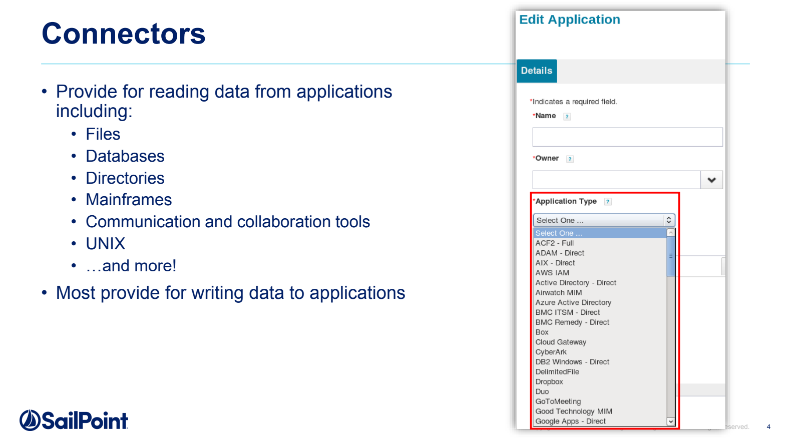
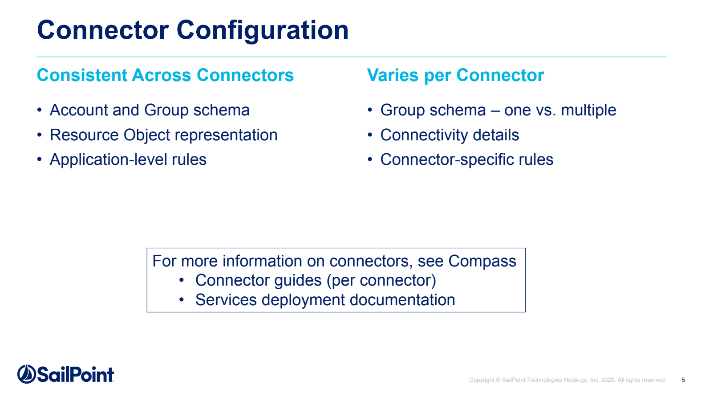
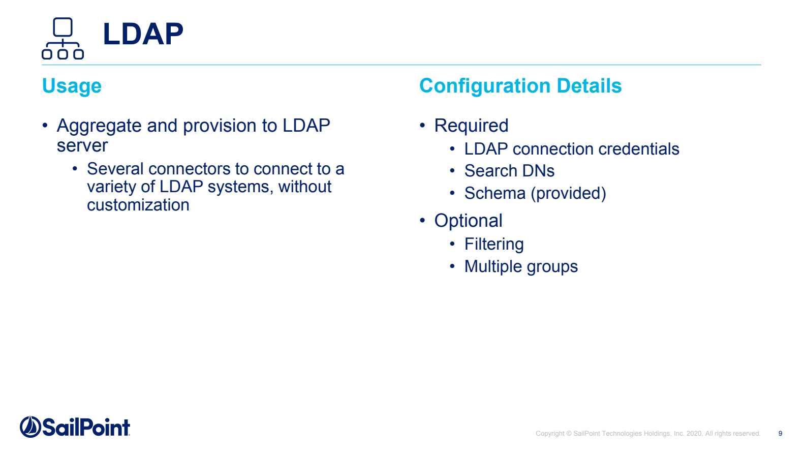
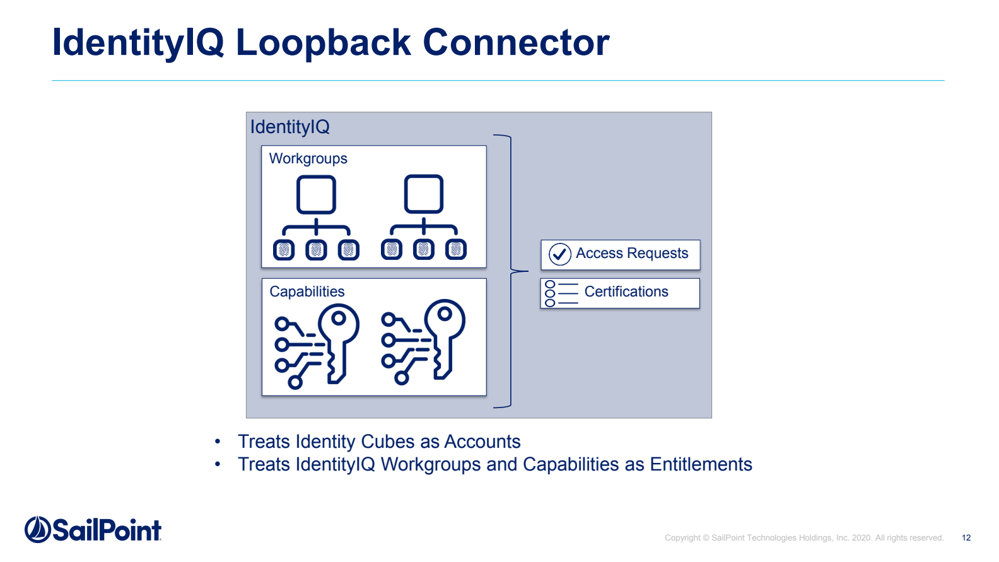
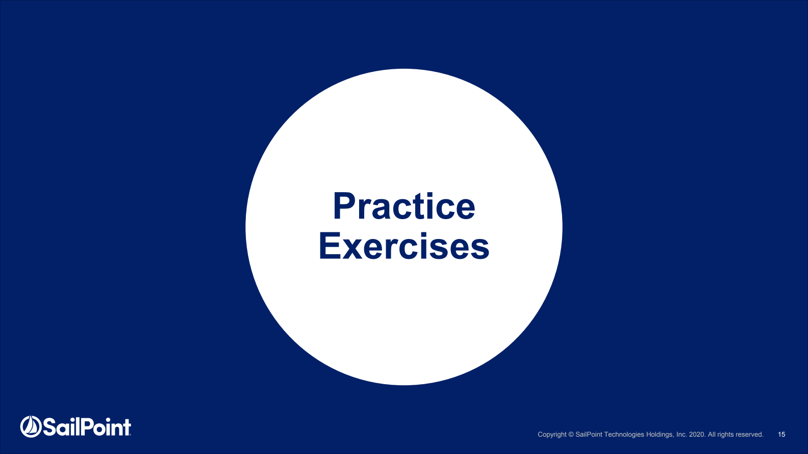

All course topics · Practice companion
13. IdentityIQ Connectors
Connector code and application configuration
A connector is the software component that reads or writes a resource and presents normalized resource objects. An Application is the configured representation of a particular resource: its connector selection, connection details, schemas and other settings. Two applications can use the same connector with different configurations.
Schemas, resource-object concepts and application-level rule locations are broadly consistent. Connection properties, connector-level rule opportunities and support for one or several group types vary. Read capability does not automatically prove that every provisioning operation is implemented.





Common connector patterns
The Delimited File example reads accounts and entitlements from a defined file and schema, with optional filtering, merging and rules. JDBC reads database information using connection details and SQL queries; its write behavior in the course requires a JDBC provisioning rule.
LDAP supplies a directory schema and needs connection credentials and search DNs. The Active Directory example adds its version-specific IQService requirement for provisioning. Web Services connects through target URLs and supported operations. These details describe the course's implementations; consult the exact connector documentation before applying them to another release.





The IdentityIQ Loopback Connector treats identities as accounts and workgroups/capabilities as entitlements, allowing governance concepts to apply to IdentityIQ's own access model. SQL Loader presents delimited data through a database-style table model. Neither should be confused with a generic claim that every connector behaves identically.



Exercise connection
Section 2 onboards Time Tracking, Chat, Finance and other business applications. It then builds a Sequential Task Launcher for ordered aggregation and refresh work, schedules the sequence, compares task results and constrains a refresh to selected identities. This demonstrates the dependency between reading accounts and calculating their identity-level effects.


Related practice and source pages
Exercise 1.5 — Define LDAP Application · Section Two — overview and contents · Exercise 2.1 — Define Business Applications · Exercise 2.2 — Aggregation and Refresh Tasks